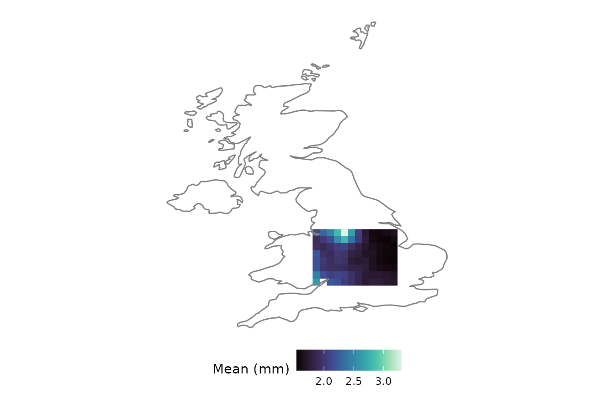
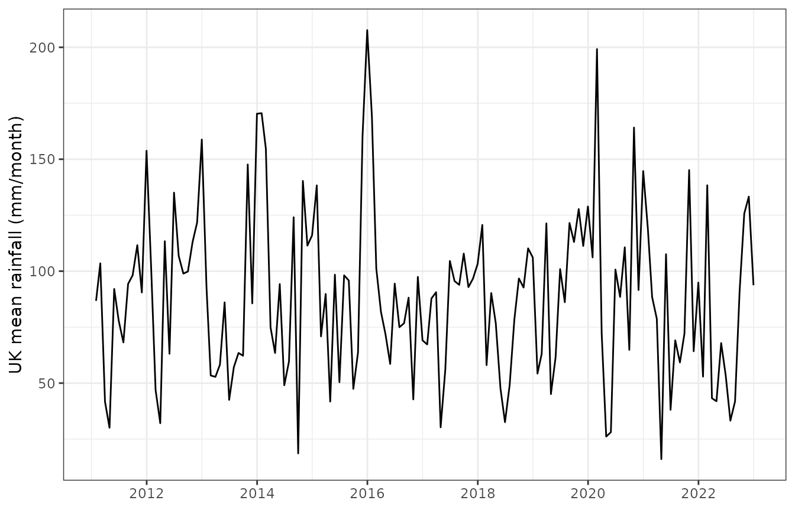

1. What is an sxts?
Gridded hydroclimatic data are two things at once: a time
series (many time steps) and a spatial field
(many locations). Workflows that maintain these separately, a
raster for space and an xts for time, incur
both a memory overhead and the constant risk of the two representations
drifting out of alignment.
anyFit’s answer is the sxts (spatial
xts) class. It is a lightweight S3 extension of xts: the
data matrix has one row per time step and one
column per grid cell, and three pieces of spatial
metadata are carried as attributes:
-
coords: a data frame ofx/ycoordinates, one row per column of data; -
projection: a CRS string describing the coordinate reference system; -
elements: the number of spatial locations (i.e. data columns).
Because sxts extends xts rather
than replacing it, the entire xts toolbox (temporal subsetting, period
aggregation, date arithmetic) remains available, while the spatial
context is retained through every operation.
2. Constructing an sxts
The usual way to obtain one is to read a NetCDF file with
nc2xts(), which returns an sxts directly. We
use the bundled E-OBS daily rainfall file, clipped to the UK.
f <- system.file("extdata", "rr_ens_mean_0.25deg_reg_2011-2022_v27.0e.nc",
package = "anyFit")
uk_name <- "U.K. of Great Britain and Northern Ireland"
rain_uk <- nc2xts(f, varname = "rr", country = uk_name)The dedicated str() and summary() methods
report the spatial and temporal extent concisely:
str(rain_uk)
#> 'sxts' Spatial xts object
#> Description: This is a spatial xts (sxts) object
#> Projection: +proj=longlat +datum=WGS84
#> Elements: 544 spatial locations
#> Spatial extent is: -7.875 , 1.625 , 50.125 , 60.625 (xmin, xmax, ymin, ymax)
#> Time series data:
#> Range of dates is from: 2011-01-01 to: 2022-12-31You can also build an sxts from scratch with the
sxts() constructor, passing a data matrix, a time index, a
coordinate table and a projection, which is useful when the data do not
come from NetCDF. The constructor validates that the number of
coordinate rows matches the number of data columns.
set.seed(1)
dates <- seq(as.POSIXct("2020-01-01", tz = "UTC"), by = "day", length.out = 30)
coords <- data.frame(x = c(-2, -1, 0), y = c(51, 52, 53))
vals <- matrix(rgamma(30 * 3, shape = 1, scale = 3), nrow = 30, ncol = 3)
toy <- sxts(vals, order.by = dates, coords = coords,
projection = "+proj=longlat +datum=WGS84")
is.sxts(toy)
#> [1] TRUE3. Accessing spatial metadata
Three accessor functions expose the spatial attributes:
elements(rain_uk) # number of grid cells
#> [1] 544
projection(rain_uk) # coordinate reference system
#> [1] "+proj=longlat +datum=WGS84"
head(coords(rain_uk)) # x / y coordinates, one row per cell
#> x y
#> 54 -5.625 50.125
#> 55 -5.375 50.125
#> 56 -5.125 50.125
#> 99 -4.875 50.375
#> 100 -4.625 50.375
#> 101 -4.375 50.3754. Subsetting is spatially aware
The [ method treats the two dimensions differently.
Subsetting by time (rows), using the full range of xts
date-string syntax, retains every location:
winter15 <- rain_uk["2015-12"] # December 2015, all cells
c(rows = nrow(winter15), cells = elements(winter15))
#> rows cells
#> 31 544Subsetting by location (columns) updates the stored coordinates and the element count to match, so that the metadata remains consistent with the data:
5. Arithmetic, lagging and differencing preserve the class
Element-wise arithmetic, comparison, lag() and
diff() all return an sxts with the spatial
attributes preserved automatically:
6. Spatial operations native to sxts
Masking
mask.sxts() restricts an sxts to a region,
given as a bounding box, a shapefile, or an
sf/Spatial* object. Here we crop to a box over
central England and confirm that the cell count is reduced.
box <- mask.sxts(rain_uk, xlim = c(-3, 0), ylim = c(51.5, 53.5))
elements(box)
#> [1] 95
nc_ggplot(basic_stats_nc(box)[["Mean"]], legend.title = "Mean (mm)",
viridis.option = "mako") +
borders("world", regions = "UK")
Zonal statistics
zonal_stats() collapses the spatial dimension by
aggregating all cells that fall within one or more polygons (supplied as
a shapefile, a country or a continent) and returns a plain
xts with one column per polygon. Below we compute the daily
spatial-mean rainfall over the UK, then aggregate it to monthly totals
for a readable series. Because the E-OBS grid contains some missing
cells, we supply an na.rm = TRUE mean, so that a single
missing cell does not propagate to the entire day.
uk_mean_daily <- zonal_stats(rain_uk, country = uk_name,
FUN = function(x) mean(x, na.rm = TRUE))
uk_monthly <- aggregate_xts(uk_mean_daily, periods = "months",
FUN = "sum")$list_months$aggregated
autoplot(uk_monthly) +
labs(y = "UK mean rainfall (mm/month)", x = NULL) +
theme_bw()
Conversion to and from rasters
When data must be passed to a raster-based tool,
rasterFromSxts() produces a RasterBrick with
time as the z-dimension, and sxtsFromRaster() performs the
inverse conversion. The round trip is lossless for the data and
reconstructs the spatial metadata.
brick_uk <- rasterFromSxts(rain_uk)
class(brick_uk)
#> [1] "RasterBrick"
#> attr(,"package")
#> [1] "raster"
back <- sxtsFromRaster(brick_uk)
c(is_sxts = is.sxts(back), cells = elements(back))
#> is_sxts cells
#> 1 4997. Concatenating along time
Reading a multi-file dataset produces a list of
sxts objects that share a grid.
rbindlist.sxts() concatenates them into one continuous
series in a single pass, which is considerably faster than repeated
pairwise rbind. To illustrate, we split the UK series into
two by time and recombine it.
part1 <- rain_uk["2011/2016"]
part2 <- rain_uk["2017/2022"]
recombined <- rbindlist.sxts(list(part1, part2))
c(rows = nrow(recombined), cells = elements(recombined))
#> rows cells
#> 4383 5448. Benefits of using the sxts class
By carrying space and time in a single validated object,
sxts eliminates the risk of misalignment between the
spatial and temporal components, so that the remaining anyFit
functionality, namely statistics (basic_stats_nc()),
aggregation (period_apply_nc()), fitting
(fitlm_nc()) and plotting (nc_ggplot()),
operates on a single, coherent structure. See
vignette("gridded-workflow") for that pipeline end to
end.